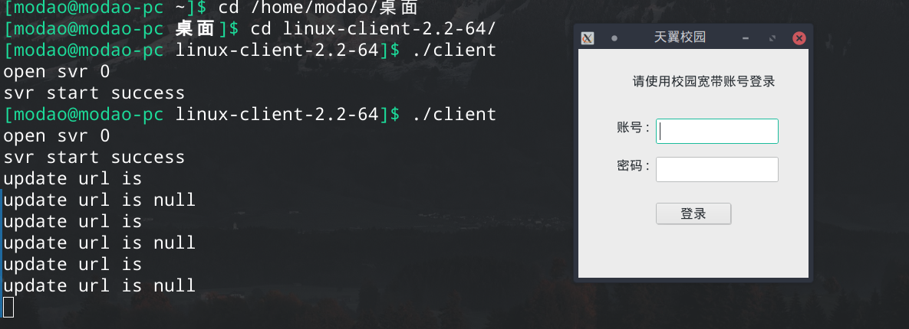
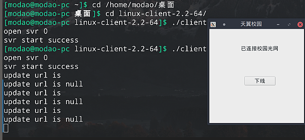

天翼客户端-Linux版使用教程
下载链接
http://zsteduapp.10000.gd.cn/More/linuxDownLoad/linuxDownLoad.html?_ijt=k6ao9d156qvuphd8h9sb4qe0k8
https://modao.lanzous.com/b0164j59a
密码:77mw
使用方法
运行环境简单检查：执行ifconfig命令，成功则环境有效
解压客户端文件，里面附带使用方法。
使用说明里提到的客户端支持
- 实测Ubuntu 16.0.4 64位可用
- 自测Manjaro 64位可用（安装net-tools包，获得
ifconfig命令支持后可用） - 理论支持
ifconfig的环境均可用，猜测程序靠此检测网卡

